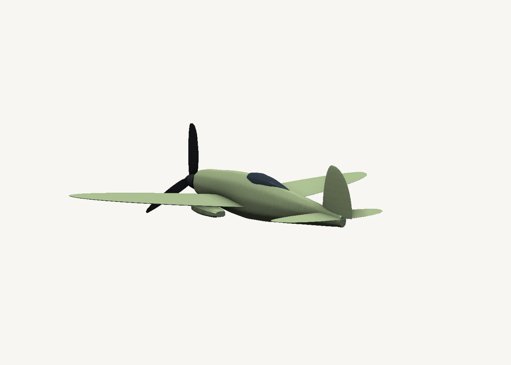
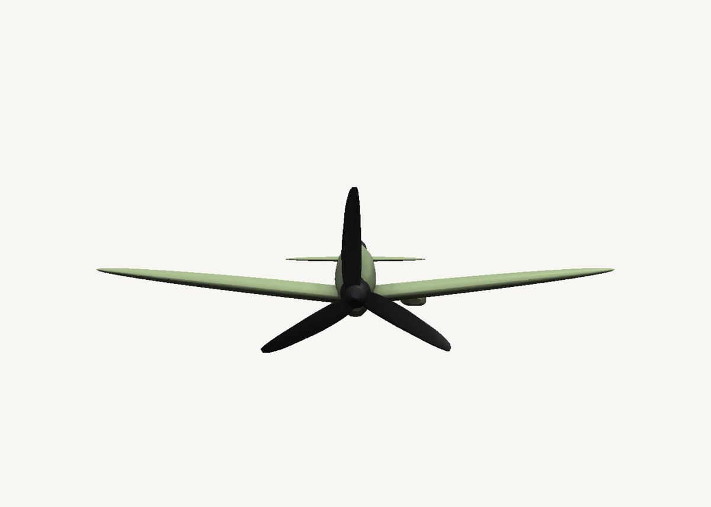

How to model an elliptical-wing aircraft in SweeperCAD
A 1930s-style fighter. Each elliptical wing is one airfoil sweep, and the ellipse is just its scale graph.
Download the model Get SweeperCAD (free)
11 objects · 258 × 278 × 80 mm · free to use, no credit needed (CC0)



How it is built
- A wing is an airfoil along a straight lineA symmetric airfoil profile swept from the root to the tip. The scale graph is the chord along the span: an ellipse, full at the root and zero at the tip. Each wing is tilted up a few degrees for the dihedral.
- The fuselage is an oval swept nose to tailIts side silhouette is the scale graph: a long cowling, deepest at the cockpit, a slim tail.
- Tailplane, fin and canopyThe tailplane uses the same elliptical trick, smaller; the fin is a quarter ellipse; the canopy a teardrop sweep half buried in the fuselage.
- A twisted propellerThree blades, each a thin airfoil swept outward with twist and a rounded tip, around a spinner.
Open it and pull on it
Download the model, open it with SweeperCAD and it lands on your asset shelf. Place it, then select any part: its profile, spine and scale graph are right there to drag, and everything downstream rebuilds - fillets included. Every curve stays editable; nothing is ever baked.
More examples
Teapot Nautilus shell Mecha arm Potted plant Robot · the whole library